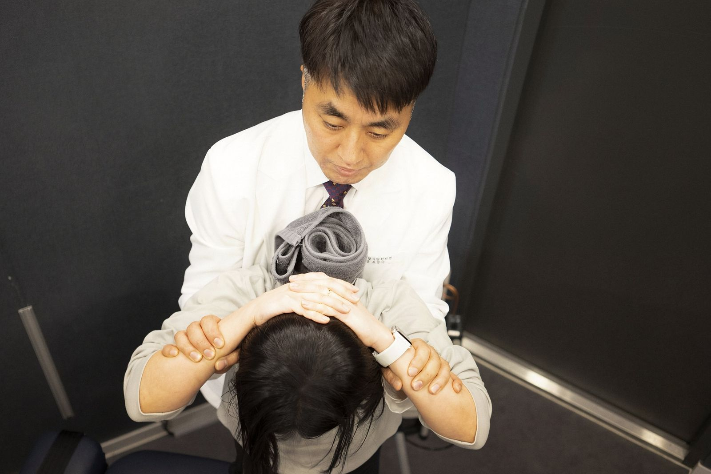

발뒤꿈치 통증은 아침 첫걸음 통증과 아픈 위치, 신발과 서 있는 시간을 먼저 확인하고, 필요하다고 판단될 때 체외충격파의 시간과 세기를 조금씩 조절하며 종아리와 발바닥 관리를 함께 안내합니다.
여쭙는 것
- 아침 첫걸음이나 오래 앉았다 일어설 때 가장 아픈가요?
- 아픈 곳이 발뒤꿈치 안쪽인가요, 발바닥 가운데인가요?
- 하루에 서 있거나 걷는 시간, 주로 신는 신발은 어떤가요?
생활에서 해 볼 것
- 일어나기 전 누운 채 발목을 위아래로 10번쯤 천천히 움직인 뒤 일어서기
- 벽을 짚고 종아리를 20~30초씩 늘려 주기를 하루 2~3번
- 집 안에서도 맨발 대신 바닥이 푹신한 실내화 신기
한의원에서 함께 살필 것
- 아침 첫걸음 통증이 몇 주째 이어지는 경우 아픈 지점과 걷는 모습을 함께 살핍니다.
- 발바닥과 함께 종아리, 무릎까지 뻐근한 경우 다리 전체의 긴장을 함께 봅니다.
- 오래 서서 일해 쉬기 어려운 경우 일하는 자세와 신발을 함께 점검합니다.
먼저 확인이 필요한 신호
- 발이 붓고 붉으며 열이 나는 경우
- 넘어지거나 접질린 뒤 체중을 실을 수 없는 경우
- 발바닥 감각이 둔하거나 저림이 함께 있는 경우

아침에 침대에서 내려와 첫발을 디딜 때 발뒤꿈치가 찌릿하다면 발바닥 아래 두꺼운 막(족저근막) 쪽 부담을 먼저 생각해 볼 수 있습니다. 좋은꿈참사랑한의원에서는 체외충격파를 바로 정하기보다 아픈 위치와 신발, 서 있는 시간을 먼저 확인하고, 필요하다고 판단될 때 시간과 세기를 조금씩 조절하며 씁니다.
왜 이런 불편이 생길 수 있나요
- 오래 서 있거나 많이 걷는 날이 이어지면 발바닥 아래 막이 당기는 부담이 쌓일 수 있습니다.
- 쿠션이 닳은 신발, 딱딱한 바닥, 집 안 맨발 생활이 발뒤꿈치 충격을 더하기도 합니다.
- 종아리와 아킬레스힘줄이 뻣뻣하면 걸을 때마다 발바닥이 더 당겨지는 경우가 있습니다.
- 운동량이나 체중이 짧은 기간에 늘어난 뒤 시작되는 분도 많습니다.

먼저 이렇게 여쭙니다
- 아침 첫걸음이나 오래 앉았다 일어설 때 가장 아픈가요?
- 아픈 곳이 발뒤꿈치 안쪽인가요, 발바닥 가운데인가요?
- 하루에 서 있거나 걷는 시간, 주로 신는 신발은 어떤가요?
- 최근 운동량이나 체중에 변화가 있었나요?
- 예전에 같은 부위를 다치거나 주사 치료를 받은 적이 있나요?
일상에서 먼저 해 볼 수 있는 것
- 일어나기 전 누운 채 발목을 위아래로 10번쯤 천천히 움직인 뒤 일어서기
- 벽을 짚고 종아리를 20~30초씩 늘려 주기를 하루 2~3번
- 집 안에서도 맨발 대신 바닥이 푹신한 실내화 신기
- 통증이 심한 동안에는 오래 뛰거나 등산하는 일 줄이기
- 오래 서 있는 날은 중간중간 앉아서 발을 쉬게 하기
한의원에서 함께 살필 수 있는 경우
- 아침 첫걸음 통증이 몇 주째 이어지는 경우 아픈 지점과 걷는 모습을 함께 살핍니다.
- 발바닥과 함께 종아리, 무릎까지 뻐근한 경우 다리 전체의 긴장을 함께 봅니다.
- 오래 서서 일해 쉬기 어려운 경우 일하는 자세와 신발을 함께 점검합니다.
좋은꿈참사랑한의원에서는 아픈 부위와 주변, 종아리까지 넓게 눌러 보고 필요하다고 판단될 때 초음파로 막의 두께와 주변을 확인합니다. 체외충격파는 제우스와 한일티엠 두 장비 가운데 부위에 맞는 것을 골라, 느끼는 강도를 여쭈며 시간과 세기를 조절하고 상태에 따라 침·약침과 이어서 씁니다. 반응이 충분하지 않으면 방법을 바꾸거나 다른 의료기관 진료를 안내합니다.
이렇게 기록해 오시면 상담이 쉬워집니다
- 아침 첫걸음 통증을 0~10 숫자로 며칠 적은 기록
- 하루 걸음 수나 서 있는 시간, 주로 신은 신발
- 통증이 심해진 날 했던 일(등산, 오래 서기 등)
- 복용 중인 약, 특히 혈액을 묽게 하는 약
시행 전에 꼭 알려 주세요
- 임신 중이거나 임신 가능성이 있는 경우
- 심장박동기 등 몸 안에 삽입한 기기가 있는 경우
- 혈액 응고를 늦추는 약을 복용 중이거나 출혈이 잘 되는 경우
- 치료할 부위에 상처, 감염, 종양이 있거나 최근 주사를 맞은 경우
이런 증상은 먼저 확인이 필요합니다
- 발이 붓고 붉으며 열이 나는 경우
- 넘어지거나 접질린 뒤 체중을 실을 수 없는 경우
- 발바닥 감각이 둔하거나 저림이 함께 있는 경우
다친 뒤 시작된 통증이라면 영상 검사가 가능한 의료기관 확인이 먼저일 수 있습니다. 복용 중인 약은 처방한 의사와 상의 없이 줄이거나 끊지 않습니다.
한눈에 보는 표
| 구분 | 핵심 |
|---|---|
| 여쭙는 것 | 아침 첫걸음이나 오래 앉았다 일어설 때 가장 아픈가요? 아픈 곳이 발뒤꿈치 안쪽인가요, 발바닥 가운데인가요? |
| 생활에서 해 볼 것 | 일어나기 전 누운 채 발목을 위아래로 10번쯤 천천히 움직인 뒤 일어서기 벽을 짚고 종아리를 20~30초씩 늘려 주기를 하루 2~3번 |
| 한의원에서 함께 살필 것 | 아침 첫걸음 통증이 몇 주째 이어지는 경우 아픈 지점과 걷는 모습을 함께 살핍니다. 발바닥과 함께 종아리, 무릎까지 뻐근한 경우 다리 전체의 긴장을 함께 봅니다. |
| 먼저 확인이 필요한 신호 | 발이 붓고 붉으며 열이 나는 경우 넘어지거나 접질린 뒤 체중을 실을 수 없는 경우 |
자주 묻는 질문
체외충격파는 몇 번 받나요?
사람과 부위에 따라 다릅니다. 매번 반응을 확인하며 횟수와 간격을 정하고 진찰 후 안내해 드립니다.
치료받을 때 많이 아픈가요?
예민한 지점에서는 찌릿한 불편이 있을 수 있어, 느끼는 강도를 계속 여쭈며 세기를 조절합니다.
신발도 바꿔야 하나요?
신발과 서 있는 시간이 통증에 영향을 줄 수 있어 지금 신는 신발을 함께 살펴보고 바꿀 점을 이야기합니다.
깔창을 쓰면 도움이 되나요?
발 모양과 신발에 따라 다릅니다. 지금 쓰는 깔창이나 신발을 가져오시면 함께 보고 이야기합니다.
이 글은 일반적인 건강 정보이며 개인의 진단이나 치료를 대신하지 않습니다. 증상이 있거나 복용 중인 약이 있다면 진료를 통해 확인하세요. 치료 효과는 개인마다 다를 수 있습니다.
좋은꿈참사랑한의원은 재진 때 지난번 이야기부터 이어서 여쭙니다. 진료시간과 예약은 오시는 길에서 확인하세요.